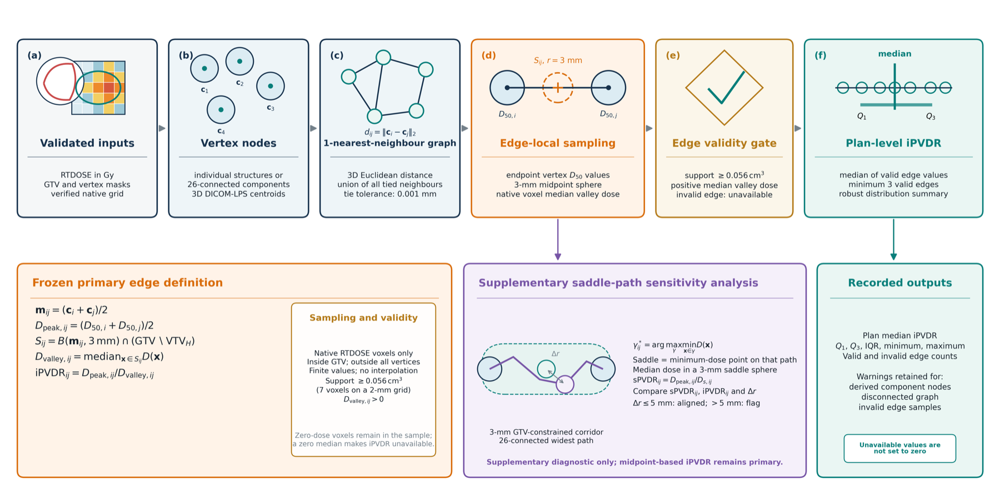

01 / Flagship system
ASCEND
Independent radiotherapy plan evaluation
A cross-platform Qt 6 workstation for validating DICOM relationships, reconstructing native dose evidence, calculating lattice radiotherapy metrics, analysing spatial PVDR and running provenance-controlled research radiobiology.
- Release
- 2.4.2
- Test files
- 44
- Documentation
- 84 files
- Workflows
- 4 GitHub Actions
